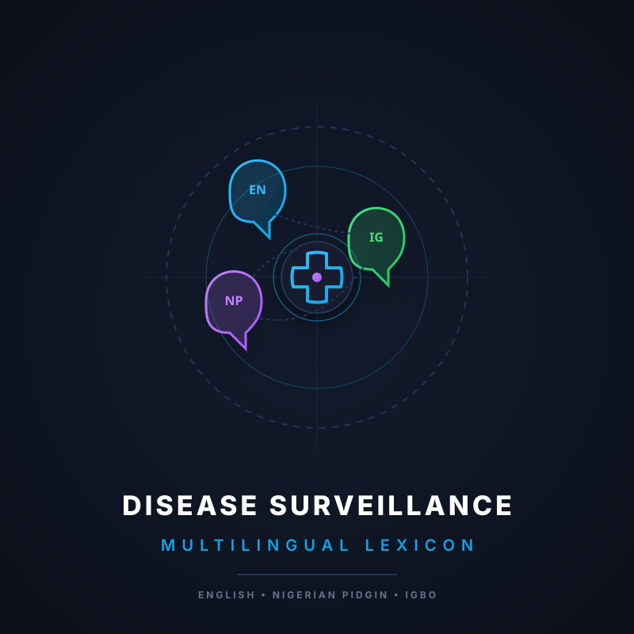

PhD Project Prototype: Server-Backed Hybrid API Architecture
Parses local digital noise using colloquial semantic variants like "body dey hot" or "ahụ ọkụ" to track syndromic anomalies early.
Acts as an localized semantic bridge within healthcare processing systems to accurately translate field reports to formal ICD indexes.
Leverages Node.js proxy to securely capture raw terms, querying the Google engine dynamically when local records face an omissions gap.